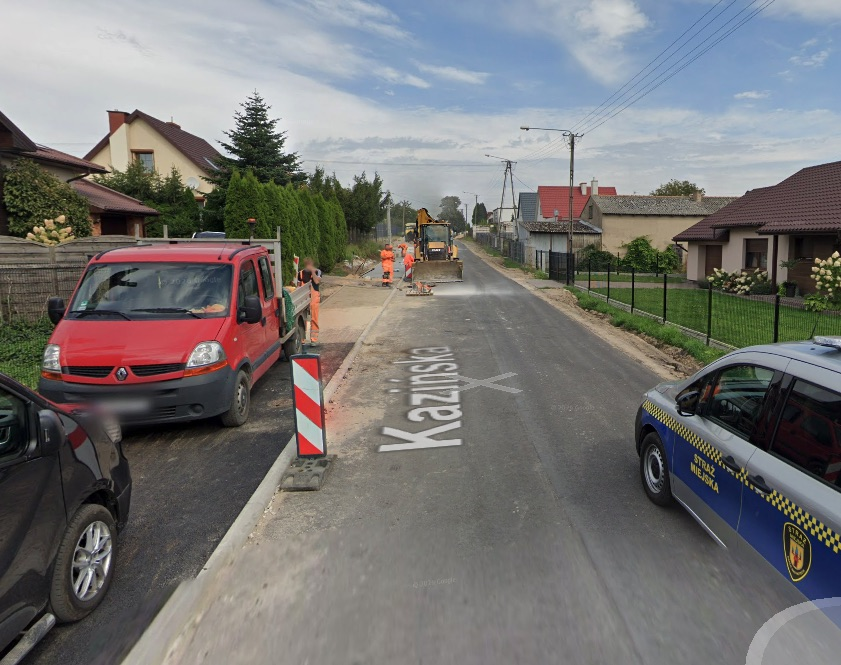

Droga powiatowa
Przebudowa drogi powiatowej nr 1924C
Projekt związany z przebudową drogi powiatowej nr 1924C, obejmujący analizę istniejącego układu drogowego, dobór rozwiązań geometrycznych oraz przygotowanie dokumentacji technicznej dla zadania drogowego.
Zakres opracowania może obejmować elementy takie jak jezdnia, pobocza, zjazdy, odwodnienie, oznakowanie, organizacja ruchu oraz rozwiązania poprawiające bezpieczeństwo użytkowników drogi.
Szczegóły projektu